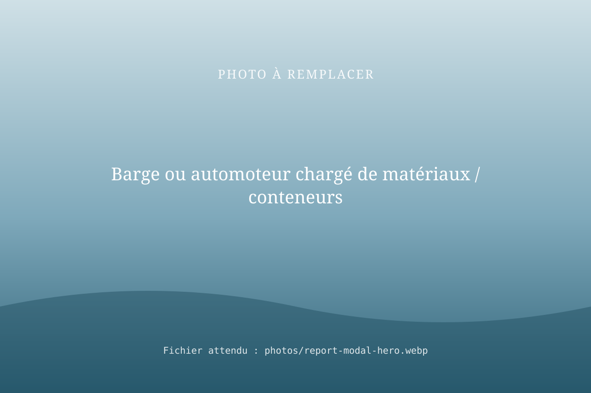

Étude de report modal vers le fluvial, financée par VNF
RivesEnRêves réalise des études qui permettent à une entreprise de basculer tout ou partie de ses transports de la route vers la voie d'eau. Ces études sont financées par VNF : elles ne coûtent rien ou presque à l'entreprise, qui obtient une réponse chiffrée et des scénarios concrets.

Pourquoi étudier le passage au transport fluvial ?
Coûts
Sur des flux réguliers et volumineux, la voie d'eau peut réduire le coût de transport à la tonne.
Climat
Un bateau remplace de nombreux camions et émet moins de CO₂ par tonne transportée.
Fiabilité
Pas de bouchons : des délais prévisibles, une logistique moins exposée à la congestion routière.
Image et territoire
Moins de camions sur les routes, un argument fort auprès des riverains, des clients et des collectivités.
Le déroulé de l'étude
Une démarche structurée, de vos flux actuels à un plan d'action concret.
- Échange sur vos flux
Marchandises ou matériaux, volumes, fréquences, origines, destinations, contraintes.
- Analyse de faisabilité
Voies d'eau et ports utilisables, gabarits, ruptures de charge, acteurs mobilisables.
- Comparaison avec la route
Coûts, délais, fiabilité et émissions, solution actuelle face à la solution fluviale.
- Scénarios de bascule
Report total ou partiel, progressif ou immédiat, avec leurs conditions.
- Recommandations
Un plan d'action clair : partenaires, étapes, points de vigilance.
Financée par VNF : ce que cela change pour vous
Voies navigables de France (VNF) soutient le développement du transport fluvial. Les études de report modal que nous réalisons sont financées par VNF : votre entreprise obtient une analyse professionnelle sans en supporter le coût, ou presque.
Les conditions de prise en charge dépendent de chaque projet. Le plus simple : décrivez-nous vos flux, nous vérifions avec vous l'éligibilité de votre entreprise.
Pour quelles entreprises ?
- Industriels et chargeurs aux flux réguliers ;
- Carrières, négoces de matériaux, BTP et grands chantiers (déblais, granulats) ;
- Agriculture et agroalimentaire (céréales, vrac) ;
- Recyclage et gestion des déchets ;
- Distribution et logistique urbaine.
Lire notre guide : faire financer par VNF une étude pour basculer vos transports sur le fluvial
RivesEnRêves a mené une mission de conseil en logistique fluviale pour VNF.
Le site de Fublaines (Seine-et-Marne), en bord de Marne, occupé dans le cadre d'une convention avec HAROPA.
Questions fréquentes
Qu'est-ce qu'une étude de report modal ?
C'est une étude qui évalue si une entreprise peut transférer tout ou partie de ses transports d'un mode (généralement la route) vers un autre, ici la voie d'eau. Elle compare coûts, délais, contraintes et émissions, puis propose des scénarios concrets.
Combien coûte une étude de report modal vers le fluvial ?
Les études de report modal réalisées par RivesEnRêves sont financées par VNF : l'étude ne coûte rien ou presque à l'entreprise. Les conditions dépendent de chaque projet ; contactez-nous pour vérifier votre éligibilité.
Mon entreprise n'est pas au bord de l'eau, le fluvial est-il possible ?
Souvent, oui. Le transport fluvial se combine avec un pré- ou post-acheminement routier ou ferroviaire depuis un port. L'étude évalue justement si cette combinaison reste intéressante pour vos flux.
Quelles marchandises peut-on transporter par voie d'eau ?
Matériaux de construction, granulats, déblais de chantier, céréales, conteneurs, colis lourds, déchets et matières recyclables, produits industriels… Les flux réguliers et volumineux sont les plus adaptés, mais chaque cas mérite d'être étudié.
Combien de temps dure l'étude ?
La durée dépend de la complexité de vos flux et de la disponibilité des données. [À COMPLÉTER : durée indicative]. Le calendrier est fixé dès le premier échange.
Vérifiez l'éligibilité de votre entreprise
Indiquez la nature des marchandises transportées et vos trajets actuels : nous vous disons si une étude financée par VNF est envisageable.